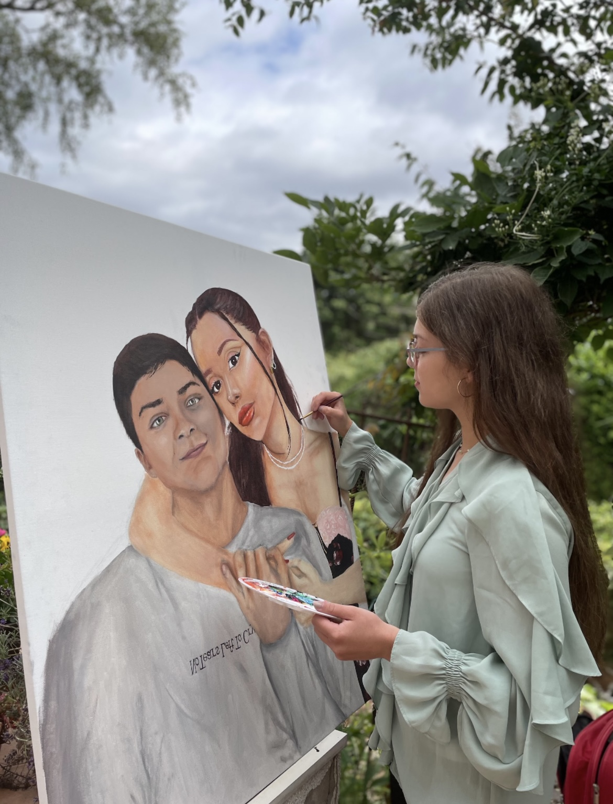
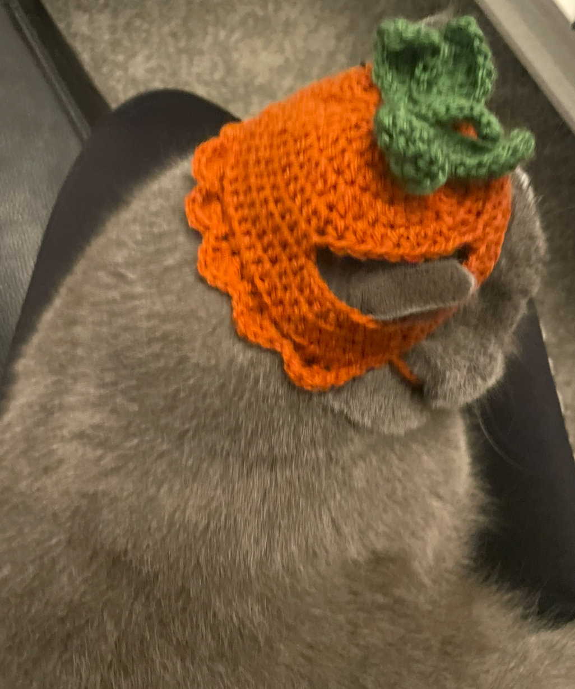

<div class="textcontainer">
<svg width="360" height="90" viewBox="0 0 360 90" aria-label="About Me">
<text
x="16"
y="64"
font-size="48"
font-weight="900"
font-family="Impact, Arial Black, sans-serif"
fill="#aac294">
About Me
</text>
<text
x="6"
y="54"
font-size="48"
font-weight="900"
font-family="Impact, Arial Black, sans-serif"
fill="#ee7fb0">
About Me
</text>
</svg>
<div style="text-align:left; font-size:26px; color:#ee7fb0; white-space:nowrap;">
❀ ❀ ❀ ❀ ❀ ❀ ❀ ❀ ❀ ❀ ❀ ❀ ❀ ❀
<span style="margin:0 16px; font-weight:600; text-shadow:1px 1px 0 #ffc1dc;">
Hey friends!
</span>
❀ ❀ ❀ ❀ ❀ ❀ ❀ ❀ ❀ ❀ ❀ ❀ ❀ ❀
</div>
<p class="margin"> </p>
<div class="center-row">
<img src="./me.JPG" alt="About me photo" width="400">
<p id="aboutme">
My name is Jasmin, and I am a senior in Leverett House studying Government and Economics. I was born and raised in Germany, where I worked in municipal politics before coming to college. On campus, I have also been involved in work related to political science, international relations, and diplomacy.
In my free time, I enjoy going to the gym and going on runs, but I am also drawn to creative activities such as knitting, sewing, crocheting, and painting. I love reading, playing soccer, and I have a strong interest in fashion. I also enjoy cooking and baking and experimenting with protein-heavy but still tasty recipes. I am deeply interested in different cultures and traveling, which is also why I enjoy learning new languages, as they allow me to understand these cultures better. Things that consistently put me in a good mood are my family and friends, sunshine, matcha, and cats.
I have really enjoyed my academic journey in college so far. Nevertheless, at times I have missed the more practical, hands-on aspect that I used to find in the creative activities I enjoy pursuing. Hence, I have always been excited to take this class in my last semester. Even though I do not have any prior experience in digital fabrication or most of the technical content of the course, it strongly sparks my curiosity and interest, and it aligns closely with my long-standing passion for creative work. I am excited to work on the projects, learn new skills, expand my horizons, and explore the intersection between my own interests, pratical problem-solving and the material of this course!
</p>
</div>
<br></br>
<div style="text-align:left; font-size:26px; color:#ee7fb0; white-space:nowrap;">
❀ ❀ ❀ ❀ ❀ ❀ ❀ ❀ ❀ ❀ ❀ ❀ ❀ ❀ ❀ ❀ ❀ ❀ ❀ ❀ ❀ ❀ ❀ ❀ ❀ ❀ ❀ ❀ ❀ ❀ ❀ ❀ ❀ ❀ ❀
</div>
Here is a painting I made some time ago and a hat that I crocheted for my cat :)
<br></br>
<div style="display: flex; justify-content: center; gap: 20px;">
<div style="width:500px; height:650px; overflow:hidden;">

</div>
<div style="width:500px; height:650px; overflow:hidden;">

</div>
</div>